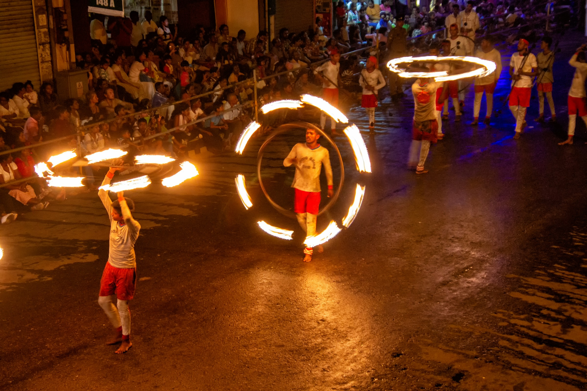
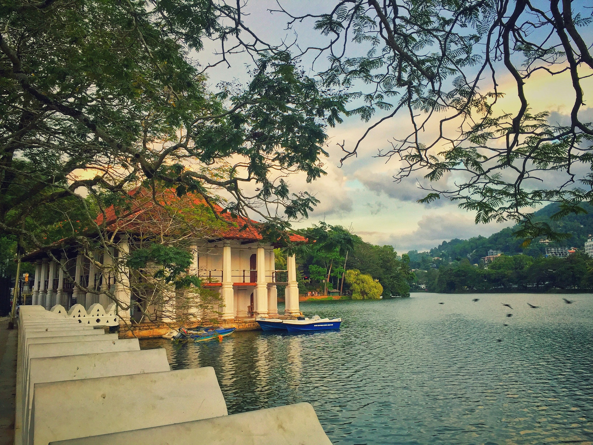

Top three activities to do at Kandy

Sri Dalada Maligawa
Sri Dalada Maligawa is a world-renowned place of worship, where the left Canine tooth of Gautama Buddha is enshrined.

Esala Perahera
The Kandy Esala Perahera is an annual religious and cultural festival.

Joy Boat Service
The boat ride takes you around the Kandy lake.